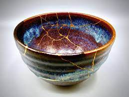

KINTSUGI - Embrace your imperfection and find happiness
Welcome to kintsugi
Kintsugi is the Japanese art of putting broken pottery pieces back together with gold

- World is imperfect , life is imperfect you are imperfect I'm imperfect ,all are kintsugi
- Kintsugi =the art of beautiful imperfection
- There is a crack in everything that's how the light gets in
- I see beauty in all those broken pieces
- Your healing is your story , mend yourself with love
- like kintsugi, beautiful broken pieces fit together to create the wonder that is your soul
Made with love!